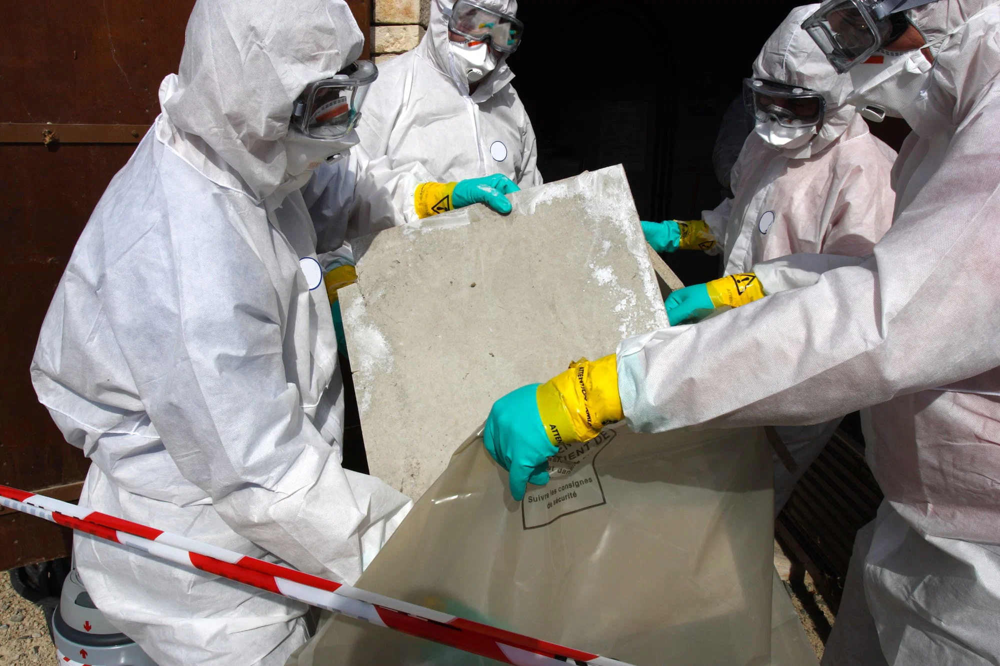
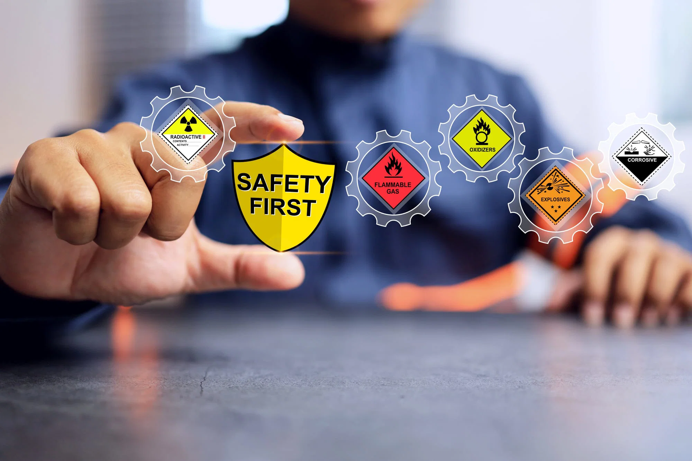
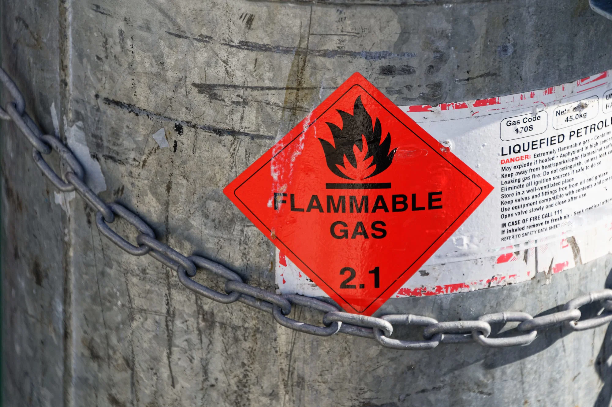
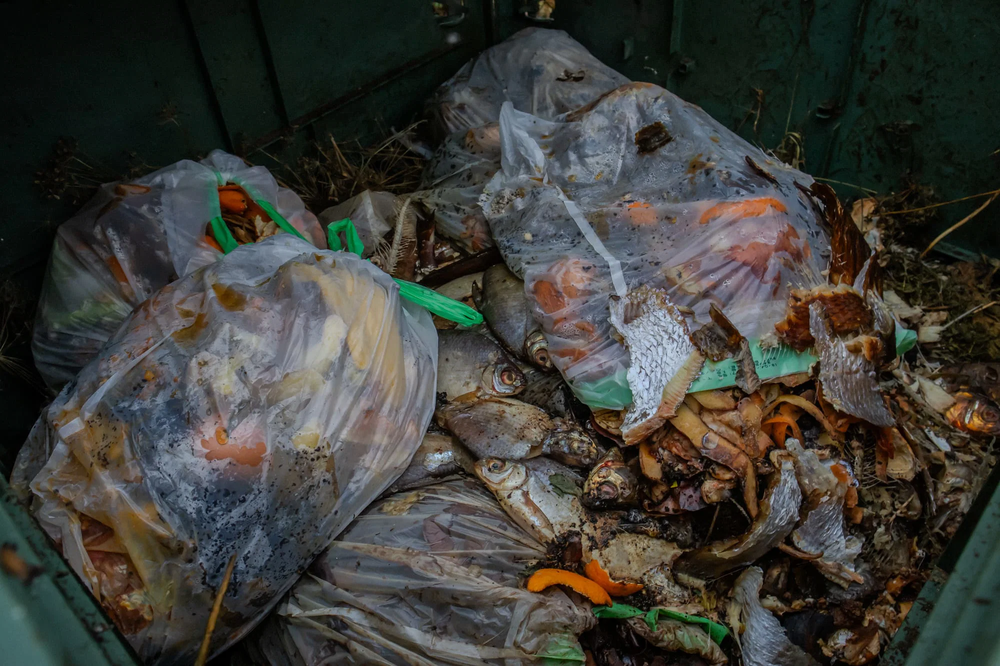
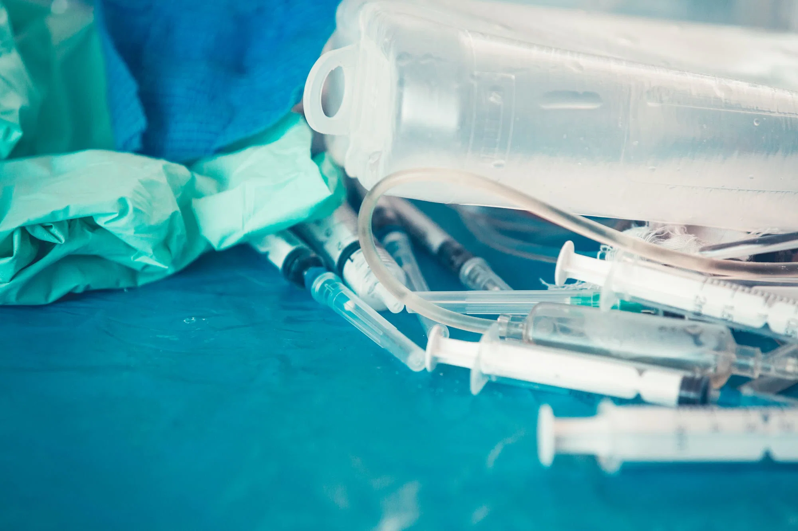
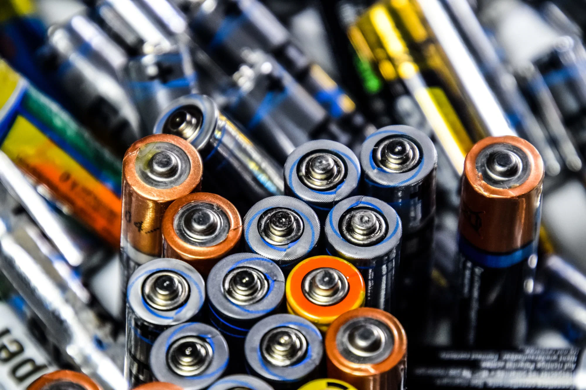
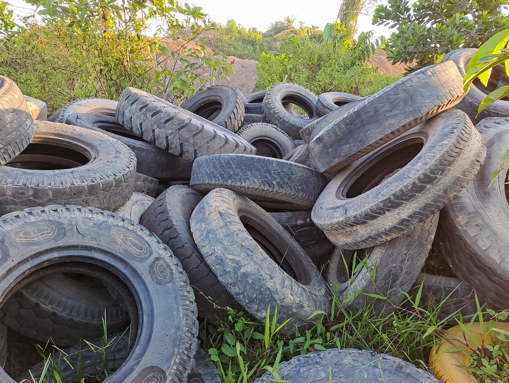
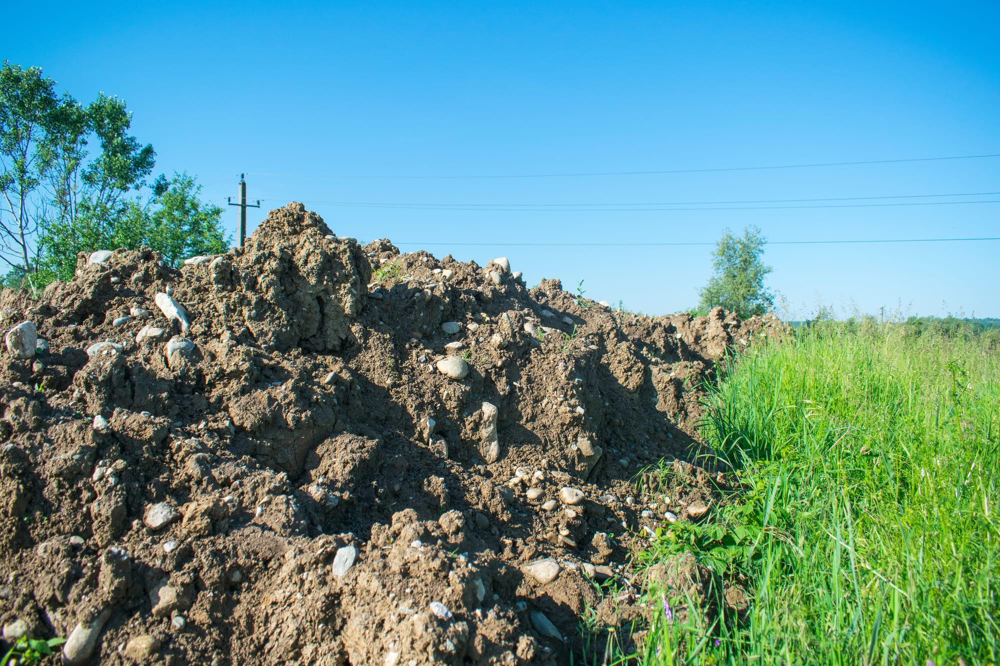

Prohibited Waste Types
For safety, health, and environmental reasons, the following items must NOT be placed in our hook bins.

Asbestos
Any material containing asbestos is a severe health hazard and must be handled and disposed of by licensed professional.

Hazardous & Flammable Materials
This includes chemicals, solvents, pesticides, herbicides, oils, fuels (petrol, diesel), and paint (wet paint is prohibited: dried paint in cans maybe accepted in some cases).

Pressurised Containers
Gas bottles, fire extinguishers, aerosol cans (unless completely empty), and other pressurised cylinders pose an explosion risk during transport or compaction.
Liquids
All forms of liquid waste, including paints, oils, and chemicals, are prohibited as they can leak and contaminate the environment and other recyclable materials.

Food & Organic Waste
Putrescible (rotting) waste like food scraps, nappies, sanitary waste, and animal or human waste is not allowed because it attracts pests, creates odors, and is typically handled through municipal waste collections.

Medical/Clinical Waste
Items such as syringes, needles, bandages, and other medical equipment are biohazards and require specialist disposal services.

Batteries & E-waste
Batteries (household and car), computers, televisions, phones, and other electronic devices contain toxic components that need to be recycled through designated e-waste programs.

Tyres & Mattresses
Due to their bulk and difficulty in processing and recycling, these often incur additional fees or are prohibited altogether.

Dirt/Soil (in some cases)
While some bins are specified for clean fill (dirt, concrete, bricks), general waste bins often prohibit large amounts of dirt, rocks, and concrete to prevent exceeding weight limits.